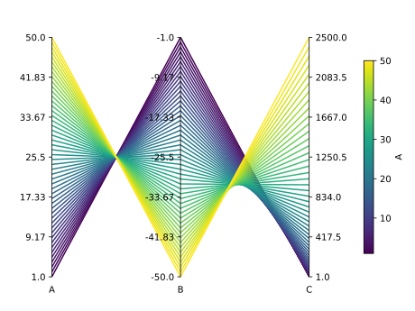

Paxplot¶
Paxplot is a Python visualization library for parallel coordinate plots based on Matplotlib. Parallel coordinate, or parallel axis, plots are common way of visualizing high-dimensional datasets. Here is an example!
Want to see how this plot is made? Check out the Usage with Pandas tutorial.
To install:
$ pip install paxplot
Contents¶
Note
This project is under active development.